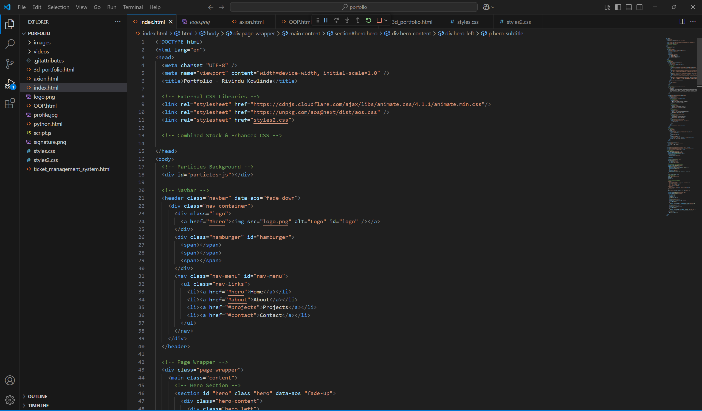

Interactive 3D Tree Navigation Project

This project is an interactive 3D visualization that uses Three.js to create a natural, tree-like navigation interface for a portfolio. It seamlessly blends creative design with advanced technical implementations. Here’s an in-depth look at its key aspects:
Overview and Concept
- Interactive Tree Navigation: The core concept revolves around a procedurally generated tree where each “fruit” on the tree represents a portfolio section or content item (e.g., About Me, Projects). The tree acts as both an artistic metaphor and a functional user interface.
- User Engagement: Visitors can explore the tree by clicking on fruits or using a quicklinks menu. Clicking a fruit triggers a smooth zoom-in animation that centers the camera on the selected fruit and reveals additional content via an info card.
Technical Breakdown
- Three.js Scene Setup: The project initializes a Three.js scene with a perspective camera and WebGL renderer. It employs OrbitControls to enable intuitive camera manipulation and provides a dynamic view of the 3D scene.
- Lighting and Environment: The scene is lit with both ambient and directional lights to create realistic shadows and highlights. An infinite grid (using GridHelper) forms the ground, adding context and depth to the environment.
-
Procedural Tree Generation:
- Trunk and Branches: The tree’s trunk is modeled as a cylinder. Branches are generated recursively using a function that creates smooth curves (via THREE.CatmullRomCurve3) and introduces randomness in angles and offsets. This results in a natural, organic look.
- Leaves: At the end of smaller branches, leaves are added using custom shapes, enhancing the tree’s visual appeal with subtle transparency and realistic rotations.
-
Interactive Fruits as Content Nodes:
- Creation and Placement: Fruits are represented by colored spheres attached to the branches. Each fruit’s color and associated content are defined in a data array. Their placement leverages the branch’s curve to determine natural positions.
- User Interaction with Raycasting: A raycaster is used to detect mouse clicks on the fruits. When a fruit is selected, the camera animates smoothly toward it using interpolation, creating a dynamic zoom effect.
-
UI Elements and Animations:
- Menu & Quicklinks: A stylish menu button reveals a quicklinks panel, dynamically generated based on the fruits. This allows users to navigate directly to different sections.
- Info Card & Back Button: Upon zooming into a fruit, an info card appears with detailed content, and a back button is provided to return the camera to its default state. These UI elements use CSS transitions for smooth appearance and disappearance.
- Intro and Ongoing Animations: The experience begins with an introductory camera animation that transitions from a distant bird’s-eye view into an orbit around the tree. Afterwards, subtle rotations and positional tweaks are applied to both the tree and fruits, ensuring the scene feels alive.
Creative and Practical Considerations
- Visual Aesthetics: The design marries a modern, minimalistic UI with an organic, nature-inspired 3D model. The use of gradients, soft shadows, and smooth animations contribute to an engaging and immersive experience.
- User Experience: The blend of 3D interaction and traditional UI elements (like quicklinks and content cards) provides a novel way for users to explore information. The animations are thoughtfully designed to guide attention and maintain a coherent navigational flow.
- Technical Mastery: This project showcases proficiency in advanced WebGL concepts, procedural geometry, and dynamic UI integration. It leverages linear interpolation for smooth camera transitions, recursive functions for natural structures, and DOM manipulation for interactive overlays.